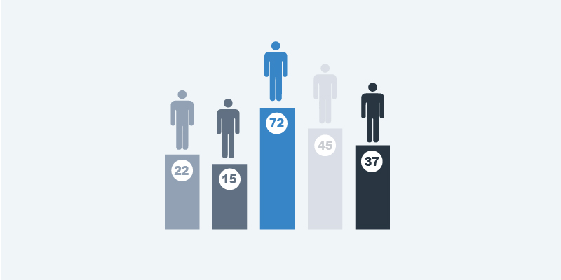

This Credit Card Fraud Detection project showcases my machine learning, data analysis, and financial technology expertise. Utilizing a comprehensive dataset from Kaggle, I developed a robust model to identify fraudulent transactions, addressing a critical challenge in this sector. The project employs popular libraries such as pandas, scikit-learn, and matplotlib for data manipulation, model training, and visualization.
I implemented various algorithms including Logistic Regression, Random Forest, and XGBoost, showcasing my ability to work with ensemble methods.
The project also highlights my skills in feature engineering, data preprocessing, and model evaluation using metrics like ROC AUC and precision-recall curves.
By tackling imbalanced data and optimizing model performance, this project reflects my capability to solve real-world problems in the rapidly evolving fields of data science.

In this airline passenger traffic forecasting project, I demonstrated proficiency in time series analysis and machine learning techniques using Python. Leveraging popular data science libraries such as pandas, numpy, and matplotlib, I implemented and compared ten different forecasting methods, ranging from simple approaches like naive and moving average forecasts to more advanced techniques such as Holt-Winters' additive method and SARIMA.
The project showcased my skills in data preprocessing, statistical modeling, and performance evaluation using metrics like RMSE and MAPE. By applying these methods to real-world airline passenger data, I gained valuable experience in handling time-dependent datasets and selecting appropriate forecasting models.

In this lead scoring project, I developed a machine learning model to predict the likelihood of lead conversion for an education company. Utilizing Python and popular data science libraries such as pandas, numpy, and scikit-learn, I performed extensive data preprocessing, exploratory data analysis, and feature engineering. I implemented a logistic regression model, which achieved an accuracy of over 75% in predicting lead conversions.
The project showcased my proficiency in handling imbalanced datasets, feature selection using VIF (Variance Inflation Factor), and model evaluation techniques. Key skills demonstrated include data visualization with matplotlib and seaborn, statistical analysis, and machine learning model deployment.

Power BI Dashboards are dynamic data visualization projects that provide deep insights into sales performance, profitability, and customer trends across various segments, products, and regions. By analyzing key metrics such as total revenue, profit margins, and unit sales, these dashboards offer strategic decision-making support through interactive visuals like time-series analysis, regional sales distribution, and profitability tracking.
Designed to empower leadership with data-driven insights, this project highlights my expertise in Power BI, data analytics, and business intelligence..

This is where I include cloud native solutions and practices for ETL and scaling up